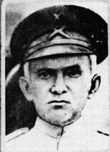

A BBC tocou sua valsa na 2ª Guerra
Tonheca Dantas
Autodidata, regeu a banda do Batalhão de Segurança de Natal (hoje banda da PM do RN) a partir de 1898 e a banda dos Bombeiros de Belém entre 1903 e 1910. Deixou mais de mil composições. Sua valsa Royal Cinema, feita para abrir as sessões de um cinema de Natal, foi transmitida pela Rádio BBC de Londres durante a Segunda Guerra Mundial, anunciada como de autor desconhecido.